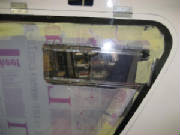

|
Feb 3, 2008 1.2 hours - Fit top window
I drilled
out the holes in the top window to 1/8", which is almost exactly the 3.2 mm diameter specified in the kit manual.
I used a plexiglass drill for this step to prevent cracking of the window. A plexiglass drill has the tip ground to
a finer point and the drill cutting edges are flattened to keep them from grabbing the material and starting a crack.
I then checked the window orientation that was the best match with the recess in the top of the fuselage
and taped it in place centered in the recess, which left about 2 mm clearance all around the lip, per the manual.
I drilled a couple of holes through the window
into the rim of the fuselage opening and checked them against the rivets supplied with the kit. I found that the rivets
were actually slightly larger than 1/8" in diameter. I measured the rivet diameter as 0.153", which is just
slightly less than a 5/32" drill (0.156"), so I drilled all the holes out to 5/32", using a plexiglass drill
stop set at 1 cm depth to keep from drilling through the bottom of the rim inside the fuselage. I inserted a rivet temporarily
at each hole as I drilled them, to keep everything aligned as I went.
I found that there are 22 holes pre-drilled in the top window,
but only 20 rivets in the kit, so I will need to obtain two more rivets from the factory. Before requesting the additional
rivets, I will check the holes against the inventory for the windshield and the side door windows.
I also
found that the kit inventory shows that the rivets for the top window and windshield are 4 mm diameter, while the rivets for
the side windows are 3.2 mm diameter. This difference was not noted in the kit manual.
I marked the top window orientation for later installation and marked around the edge of the fuselage rim on the
protective film covering the top surface of the window.
I then removed the window and drilled the holes to 4.5 mm for clearance around the rivets when the window is installed,
relieving any stress on the holes when the rivets are squeezed so that the window will not crack after installation under
the stress of engine vibration and temperature changes.
February 12, 2008 1.5 hours - Prepare
top window for painting
I confirmed that the number of rivets matched the number of mounting holes for the windscreen and side
windows, so I emailed Leon at Pipistrel and requested two more rivets for the top window. Leon immediately mailed me
some additional rivets, which arrived in a few days.
I chamfered the edges of the top window
using a single-edge razor blade as a scraper held at 45 degrees to the surface. Then I sanded the edge all the way around
with #400 emery cloth. I sanded parallel to the edge until I had removed all scratches left perpendicular to the edge
by the saw when the window was cut to its original shape. I also chamfered both sides of each hole slightly with a rotary
cutter.
I peeled the plastic covering away from the edge of the inside surface of the lexan,
exposing the frame edge outline on the outside surface. I held the plastic back from the edge with masking tape, then
applied black plastic (electrical) tape matching the frame outine. I then used some additional masking tape over the
black plastic tape to ensure that the masking would have no gaps to let the spray paint through.
Before the exposed edge is painted, it must be sanded with #1000
paper to remove the shine from the surface so that the paint will adhere. I wasn't able to do this immediately after
completing the masking. This picture was taken a few days later, showing that the plastic tape had pulled away from
the surface. So, when you do this, plan to proceed immediately to the sanding and painting step. I had to remove
the tape and mask it again.
March 22, 2008 2.5 hours - Paint top window and prepare left door window for mounting
I re-masked the top window where the black plastic tape
had pulled away from its original position while it sat idle for several days. I sanded the exposed edge with emery
cloth to remove the gloss from the lexan surface, and then sprayed the edge black with the bumper spray paint provided
in the kit. I applied two light coats of paint as instructed in the kit manual, then set the window aside to dry.
The result is a black perimeter on the inside surface of the lexan matching the shape of the window opening in the top of
the fuselage.
I set the top window aside to
be installed after the other work on the fuselage is completed.
I positioned
the left door window over the frame. The left and right windows are close in shape but not identical. In the standard
kit the left door has ventilation openings drilled in the lower forward corner. The right door has a rectangular cutout
for a sliding panel. In my kit I also specified an option for a second sliding panel in the left door, situation high
enough to be used for aerial photography with a hand-held camera.
I taped the window in position on the frame to achieve an even
gap around the edge. Then I drilled the mounting holes through the lexan into the frame with a 1/8" drill, using
cleco clamps in each hole to keep the window from shifting. I used a drill stop on the drill to ensure that I didn't
drill all the way through the inside of the door frame. Then I marked the edge of the door frame on the outside surface
of the window (actually, on the protective plastic coating) with a fine Sharpie marker.
I removed the clecos and tape and set the window aside.
I then enlarged the holes in the frame slightly with a #29 drill (3.4 mm), because the rivets would not slip through the 1/8"
holes.
Next I enlarged the holes in the window to 5/32" (3.9 mm) for extra clearance around the rivets to
avoid stress on the lexan as the rivet expands on installation. I chamfered the edges of the window and sanded the edge
all the way around with #400 emery cloth. I sanded parallel to the edge until I had removed all scratches left perpendicular
to the edge by the saw when the window was originally cut to shape.
As with the top window, I peeled the plastic covering away from the
edge of the inside surface of the lexan, exposing the frame edge outline on the outside surface. I held the plastic
back from the edge with masking tape, then applied black plastic (electrical) tape matching the frame outline. I then
used some additional masking tape over the black plastic tape to ensure that the masking would have no gaps to let the spray
paint through.
I sanded the exposed lexan surface with emery cloth to remove
all sheen, then sprayed it with two coats of black bumper spray paint.
You can see the rectangular camera window
in the upper portion of the window.
March 23, 2008 2.4 hours - Prepare right door window
for installation
I prepared the right door window for installation in the same way as the left. This window came
right up to the edge of the door recess in a few places, so I filed those edges back slightly to get an even gap of approximately
2 mm all the way around. I set both windows aside for the paint to dry for a full day before
installing them in the door frames.
March 24, 2008 3.5 hours - Install windows in doors
I applied a small (approximately 1/8") bead of black silicone
along the center of the window recess in the right door, then set the window in place carefully. I left all the masking
in place to catch any silicone squeezed out of the joint. Then I inserted clecos in all the holes, securing the window
in place. The clecos also pulled the window against the door, squeezing the silicone into the joint. The 1/8"
bead worked out pretty well, with only a very minor amount of excess silicone appearing at the edges of the joint. Then I removed the clecos one by one, pulled the plastic covering back
from the edge and held it with masking tape, inserted a rivet in each hole and fastening it with a hand-operated pop rivet
puller. After all the rivets were installed, I wiped away any excess silicone with a paper towel, then taped a sheet
of bubble wrap plastic sheet over the outside of the door to protect the window during the remainder of the construction. I turned to door over and removed the black plastic tape from the edge
of the window, which also neatly pulled away the bit of silicone that squeezed out on that side of the joint. Then I
taped another piece of bubble wrap to the inside of the door to project the window. I repeated these steps in the same way for the left door.
April
28th-29th 2011 7.0 hours - Install left cockpit door
I unpacked the left door and sorted
out the pieces. I taped the door in place in the fuselage door opening, then taped the hinges in position and lined
up the hinge axes with a ruler. Then I drilled 4 mm holes in the fuselage for the top leaves of the hinges, using clecos
to secure the hinges as I drilled the holes. I then riveted the hinges to the fuselage with 4 x 12 pull rivets.
Then I carefully drilled through door frame at the bottom leaves of the hinges. I untaped the door and secured it
to the hinges with clecos while holding the door clear of the fuselage. Then I riveted the door to the hinges with 4
x 8 pull rivets.
Finally, I countersunk the fuselage door frame behind the hinges to clear the tails of
the rivets when the door closes.
Installing the door latch mechanism is
challenging. It requires drilling holes through three tabs molded into the edge of the door frame for the latch rods.
These holes have to be reasonably well centered in the tabs, but drilled at an angle toward the door handle. The holes
also have to be elongated to allow the rods to swing as the handle is rotated, and the holes have to be located at the right
point to secure the door against the fuselage as the rods are extended by rotating the door handle.
After visualizing
how all this is going to work, I began by drilling 7 mm holes through the door tabs at my best estimate for the hole position
and angle. Then I gradually opened up the holes with a round file until the 8 mm diameter rods slid through the holes
and permitted the full range of motion between door latched and door unlatched. This required a lot of trial fitting
of the door latch until everything worked.
After the door handle and latch rods were installed and working
correctly, I installed the handle stop pin that limits the handle rotation at the latched and unlatched positions.
All this was made more complicated by
mounting the latch mechanism after the door was already mounted on the fuselage. Now that I've figured out the process
on the left door, I am confident enough to install the right door latch mechanism before mounting the door on the fuselage,
which I believe will same a lot of time.
I mounted the vent in the lower forward corner of the door with the three
small machine screws provided, after opening up the holes in the door window to 3.5 mm and chamfering the edges of the holes.
I removed sections of the window protective covering at the location of the vent before installing it, but left the protective
cover on most of the window to guard against scratches until the plane is done.
I ordered a second sliding window for
the pilot's door with my kit. I removed the covering where the sliding window is installed, drilled the mounting holes
to 3.5 mm and installed the sliding window.

May
1st & May 7th 2011 10.5 hours - Install right cockpit door
I laid out the door latch mechanism on
the right door and started by drilling the 8 mm hole in the lower tab. I was able to drill this hole at about the right
angle using the drill freehand, then opening it up with a round file to get free movement throughout the range of motion of
the latch mechanism.
The holes in the tabs of the forward and aft door frames, however, are at angles that don't
allow the freehand method to work well. So I decided to make a jig to assist in drilling those holes. I fashioned
a drill jig out of some scrap 1/2" aluminum, then taped it to the door with some double-sided foam tape and drilled the
two 8 mm holes. The jig required two holes at the two angles for the forward and aft tabs. It took awhile to make
the jig, but in the end it worked quite well.
After satisfying myself that the latch mechanism would now
mount with no further adjustment, I taped the door to the fuselage and installed the door hinges.
I installed the door latch mechanism on the right door and adjusted it so that it pulls the door tightly into the fuselage
door frame. This required removing some material from the lower forward corner of the door so that it fits fully into
the fuselage, flush with the surface. I had to shorten the lower latch arms on both left and right doors to clear
the fuselage when retracted. On the right door I had to file some small divots into the lip around the door frame so
that the latch arms would extend fully. After fiddling with all this and removing and re-installing the latch mechanism
a few times, it works well and the door fits nicely. I installed the sliding window on the door, after opening up the
holes for the mounting screws and then adjusting some of them with a small round file until the screws fit into the tapped
holes in the door slides. I also removed some material from the lower forward corner of the left door, until it also
fit flush into the fuselage, and adjusted the latch mechanism for snug closure.
June 18th-19th 2011 3.0 hours - Install door holders
With the wings mounted it was finally possible to install
the door holders. My kit did not have the position of the door suspend post marked on the wings, but an email to Pipistrel
produced measurements for the post position of 50 cm from the wing root and 34 cm from the wing trailing edge. I checked
those measurements against the door and the door holder pieces, and the position looked satisfactory. It also agreed
with photos I had taken of other Pipistrel aircraft, so I drilled an 8 mm hole at that position in the lower wing surface
for the post mount, inserted the mount and screwed the post into it. The mount fit tight enough to hold the door temporarily,
so I delayed mounting it permanently with epoxy until I can let it cure undisturbed for a full day. I swung the door up to the post, marked the post position on the door window, drilled a 10 mm hole at that point
and mounted the door quick release. Checking the engagement and release, all works fine. I mixed
some epoxy, roughed up the door post mounts, removed the gel coat where the door posts mount on the wings, then epoxied the
post mounts in place and held them with tape for the epoxy to cure.
July 24th 2011 1.6 hours - Install top window
I applied a bead of black silicone caulk
around the fuselage recess for the top window. I placed the window in position and secured it with 5/32" clecoes.
Then I replaced the clecoes one at a time with rivets. Finally, I removed the protective covering from the window and
cleaned up the areas where the caulk had squeezed out from the joint around the window.
August 7th 2011 2.8 hours - Install windscreen
I started the windscreen installation
by first doing a trial fit to determine which side goes forward. It is not exactly symmetrical, so it fits one way,
but not the other. My son helped with with this installation. It would be very difficult to accomplish alone.
Then I taped the windscreen in position with an even gap all around and drilled the bottom center hole through the
fuselage. I opened up that hole to fit the machine screw that mounts the bottom end of the windscreen support bracket.
Then I remove the windscreen and installed the support bracket.
To mount the bracket, I cut an opening
through the face of the fuselage flange to accept the flattened bottom end of the bracket, centered under the mounting hole
drilled previously. I trimmed about 10 mm from the bottom end of the bracket, so that it extended just to the back
side of the firewall, adjusted the angle of the bend at the bottom end of the bracket until it fit into the hole in the
flange and into the mounting piece that clamps over the top forward fuselage cross-brace. I drilled the bolt hole
through the bottom end of the bracket, and tightened the screws in the upper mounting piece. Then I peeled the protective
strip off the back of the rubber strip that goes over the front of the bracket, between the bracket and the windscreen,
and stuck the rubber strip to the bracket, extending from the edge of the fuselage flange at the bottom, up and over the
mounting piece at the top.
We then put the windscreen back in position,
secured at the bottom center with the bracket mounting bolt. With the center position now fixes, we taped the windscreen
down again, checking for an even gap all around. Then I drilled each mounting hold through the fuselage, using a 1/8"
plexiglass drill. My son installed clecoes as the holes were drilled, to hold the windscreen down as we progressed.
I alternated side to side and top to bottom, being careful to avoid building up any skew in the windscreen position as we
worked the windscreen down into the fuselage.
Before final mounting, the fuselage holes will be enlarged to 5/32"
to accept the mounting rivets. The windscreen holes will be enlarged to 3/16" to allow for some movement and avoid
stresses that might crack the plastic. The edges of the windscreen holes will also be chamfered to remove any nicks
or sharp edges that can create stress risers.

August
14th 2011 0.4 hours - Windscreen installation
I marked the outline of the inside edge
of the fuselage windscreen mounting lip on the front side of the windscreen with a fine felt marker. Then I removed
the clecoes and laid the windscreen face down on my workbench. Then I enlarged the windscreen mounting holes in the
fuselage to 5/32" to fit the mounting rivets. I used a drill stop to keep from drilling too deep around the top
edge of the windscreen.
August
21st 2011 1.7 hours - Paint windscreen edge
I enlarged the rivet holes in the windscreen
to 3/16" to allow room for some movement without placing stress on the windscreen that could lead to cracking.
Then I used a countersink to chamfer the edges of each hole and removed the sharp corners of the windscreen edge with fine
emery cloth.
I peeled back the protective plastic coating on the inside surface of the windscreen to expose the
line marked around the mounting lip on the outside surface. I held the plastic back with masking tape, then used electrical
tape to mask the inside surface of the windscreen at the line.
I sanded the exposed windscreen surface around the
edge with fine emery cloth to dull the surface in preparation for painting. I vacuumed the surface thoroughly and sprayed
the edge with three fine coats of flat black automotive bumper paint.

|